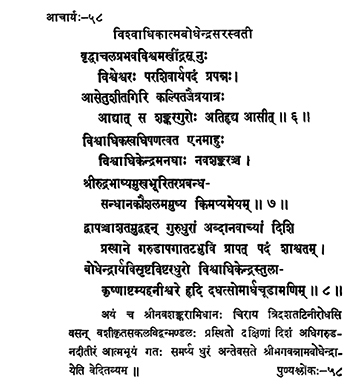

58. आचार्य - 58 - विश्वाधिकात्मबोधेन्द्रः
वृद्धाचल ••• आसीत् ॥ ११५ ॥
विश्वाधि ••• किमप्यमेयम् ॥ ११६ ॥
द्वापञ्चाशत ••• चूडामणिम् ॥ ११७ ॥
अयं च ••• वेदितव्यम् ॥
Viśveśvara was the son of Viśvamakhindra; resorting to the fact of Paraśivārya, known as Navaśaṅkara from the first preceptor toured all places successfully, from Setu (Rāmeśvaram) to Sītāgiri (Himalayas).
Since he possessed intellect more than anyone in the Universe, men of wisdom call him Viśvādhika and Navaśaṅkara. His erudition in composing works such as Rudra bhāṣya is beyond words - immeasurable.
The preceptor Viśvādhikendra carrying out the responsibilities of preceptor for fifty-two years, (later) handing over the responsibilities to Bodhendrārya, and proceeding in southern direction reached eternal abode, meditating on Lord Śiva with the crescent moon in the crown, on the banks of river Garuḍa on the eighth day of the black fortnight in the month of Tulā of the year Īśvara.
This preceptor Śrī Navaśaṅkara residing on the banks of river Tridaśa was revered by eminent men, departed in the southern direction and attained siddhi on the banks of river Garuḍa after handing over the responsibilities to the disciple Śrī Bhagavannāma Bodhendra.
